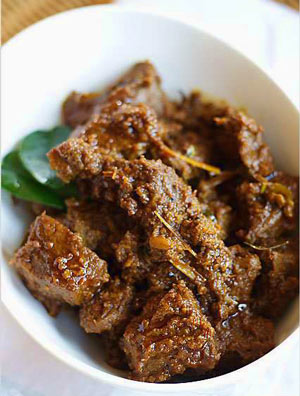

|
|
Cara Membuat Rendang Daging
- Panaskan minyak, tumis bumbu halus, daun kunyit, daun jeruk, serai dan pekak hingga harum.
- Masukkan daging, aduk hingga berubah warna.
- Tuang santan dan tambahkan kelapa parut sangrai, masak di atas api sedang sambil diaduk perlahan hingga mendidih.
- Kecilkan api, masak hingga daging matang, berminyak dan kecoklatan.
- Angkan dan sajikan.
Bahan
- daging sapi lulur 500 gram, potong melebar kurang lebih 12 bagian
- daun kunyit 2 lembar
- daun jeruk 2 lembar
- serai 2 batang, memarkan
- pekak 1 buah
- kelapa parut sangrai 2 sendok makan
- santan 1000-1500 ml dari 2 butir kelapa
- minyak goreng 2 sendok makan
Bumbu Halus
- bawang merah 10 butir
- bawang putih 6 siung
- cabai merah 150 gram
- cabai rawit sesuai selera
- kemiri 5 butir
- jinten 1/2 sendok teh
- ketumbar 1 sendok teh
- kunyit 1/2 cm
- jahe 1 cm
- garam secukupnya
|

Video on Youtube
|